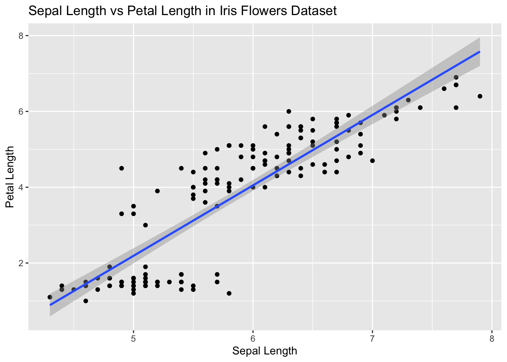
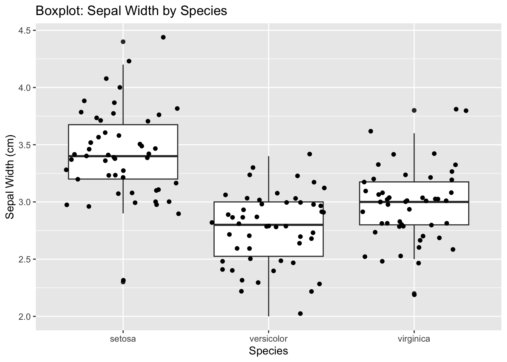
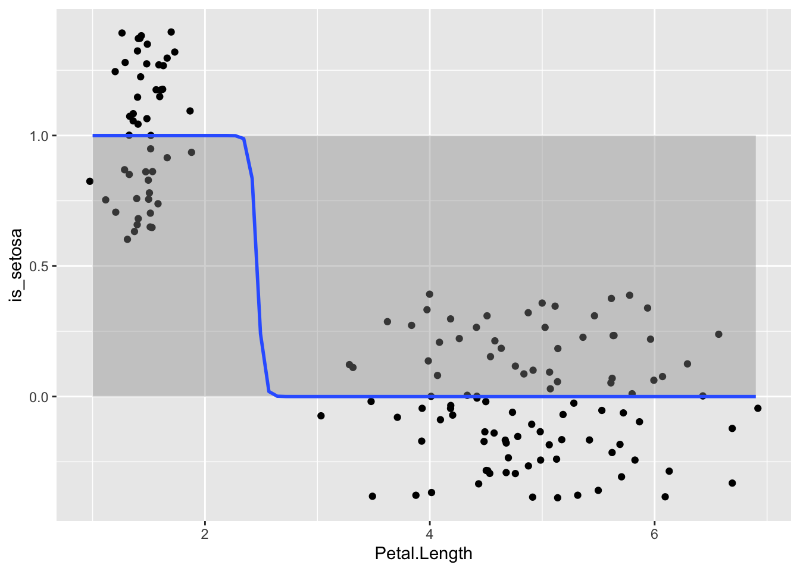
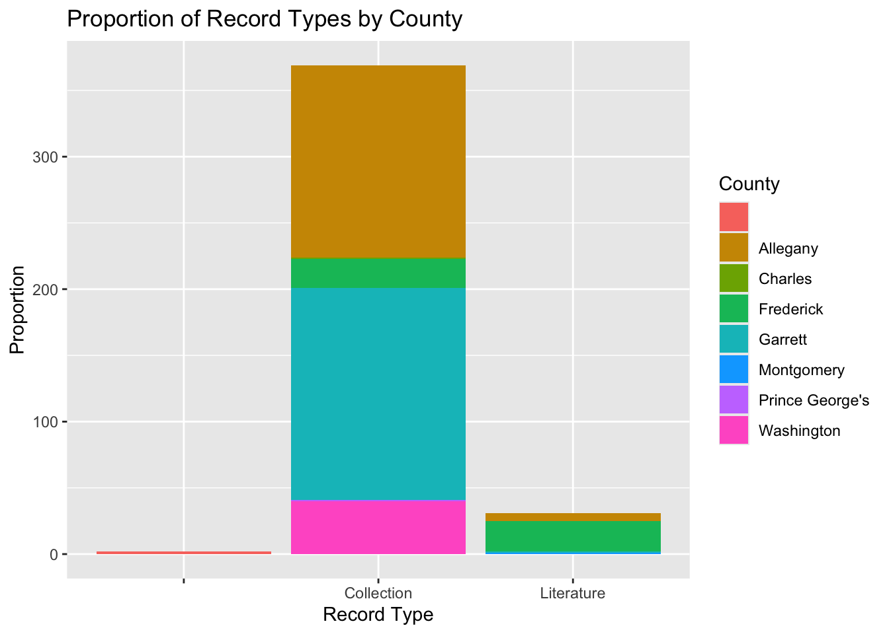

library(ggplot2)
head(iris) Sepal.Length Sepal.Width Petal.Length Petal.Width Species
1 5.1 3.5 1.4 0.2 setosa
2 4.9 3.0 1.4 0.2 setosa
3 4.7 3.2 1.3 0.2 setosa
4 4.6 3.1 1.5 0.2 setosa
5 5.0 3.6 1.4 0.2 setosa
6 5.4 3.9 1.7 0.4 setosa#x and y are continuous variables and Display the relationship between the variables, Include a fitted regression line
ggplot(iris, aes(x = Sepal.Length, y = Petal.Length)) +
geom_point() +
geom_smooth(method = "lm") +
labs(title = "Sepal Length vs Petal Length in Iris Flowers Dataset",
x = "Sepal Length",
y = "Petal Length",)`geom_smooth()` using formula = 'y ~ x'
#(x) is a categorical variable representing groups (e.g., treatment A/B/C), (y) is continuous
ggplot(iris, aes(x = Species, y = Sepal.Width)) +
geom_boxplot() +
geom_jitter() +
labs(title = "Boxplot: Sepal Width by Species",
x = "Species",
y = "Sepal Width (cm)")
#Use a dataset where (x) is continuous (y) is binary (0/1)
#First i need to create a binary variable where 1 if setosa or 0 if not
iris$is_setosa <- ifelse(iris$Species == "setosa", 1, 0)
ggplot(iris, aes(x = Petal.Length, y = is_setosa)) +
geom_jitter() +
geom_smooth(method = "glm", method.args = list(family = "binomial"))`geom_smooth()` using formula = 'y ~ x'Warning: glm.fit: algorithm did not convergeWarning: glm.fit: fitted probabilities numerically 0 or 1 occurred
# Q4 using Hogan_Plecopetra_dataset bc it has a bunch of discrete x and y, Use a dataset where both variables are categorical.
# had to clear off top part of the file because when converting to csv positron wasn't reading it right.
# notes- not sure why there is a red bar on the left of the figure, I think its another county that wasn't coverted properly or a record type that was wrong or something but I gave up
Plecopetera_data <- read.csv("Hogan_Plecoptera_Dataset_copy_csv.csv")
head(Plecopetera_data) ID Type ownerInstitutionCode catalogNumber
1 1 Collection WKUC
2 2 Literature Literature (Duffield and Nelson, 1990)
3 3 Literature Literature (Duffield and Nelson, 1993)
4 4 Collection INHS Insect Collection 654545
5 5 Collection RFSC Plecoptera 16976
6 6 Collection RFSC Plecoptera 16977
kingdom phylum class order family genus specificEpithet
1 Animalia Arthropoda Insecta Plecoptera Capniidae Allocapnia aurora
2 Animalia Arthropoda Insecta Plecoptera Capniidae Allocapnia aurora
3 Animalia Arthropoda Insecta Plecoptera Capniidae Allocapnia aurora
4 Animalia Arthropoda Insecta Plecoptera Capniidae Allocapnia curiosa
5 Animalia Arthropoda Insecta Plecoptera Capniidae Allocapnia curiosa
6 Animalia Arthropoda Insecta Plecoptera Capniidae Allocapnia curiosa
scientificNameAuthorship vernacularName taxonomicStatus taxonRank
1 Ricker, 1952 Aurora Snowfly accepted species
2 Ricker, 1952 Aurora Snowfly accepted species
3 Ricker, 1952 Aurora Snowfly accepted species
4 Frison, 1943 Peculiar Snowfly accepted species
5 Frison, 1942 Peculiar Snowfly accepted species
6 Frison, 1942 Peculiar Snowfly accepted species
typeStatus identifiedBy dateIdentified eventDate month day year preparation
1 not type P.N. Hogan 2020 3/7/20 3 7 2020 vial
2 not type NA <NA> NA NA NA
3 not type NA <NA> NA NA NA
4 not type R.E. DeWalt 2013 3/12/13 3 12 2013 Vial
5 not type NA 2/14/96 2 14 1996 Vial
6 not type NA 2/14/96 2 14 1996 Vial
recordedBy fieldNumber habitat basisOfRecord adultMale adultFemale
1 P.N. Hogan PNH-019-20 stream Preservedspecimen 1 1
2 0 0
3 R.M. Duffield 0 0
4 R.E. DeWalt 0 1
5 R.F. Surdick stream PreservedSpecimen 0 0
6 R.F. Surdick stream PreservedSpecimen 0 0
immatureNymph X1uvium individualCount sex lifeStage country
1 0 0 2 male, female adult USA
2 0 0 31 adult USA
3 0 0 1 female adult USA
4 0 0 1 USA
5 0 0 0 USA
6 0 0 0 USA
countryCode stateProvince county waterBody
1 US Maryland Charles tributary to Mattawoman Creek
2 US Maryland Frederick Big Hunting Creek
3 US Maryland Frederick Big Hunting Creek
4 US Maryland Allegany Flintstone Creek
5 US Maryland Allegany
6 US Maryland Allegany tributaries of Town Creek
locality
1 MD-225 Hawthorne Rd., just before Arlough Private Lane, Myrtle Grove WMA
2 Catoctin Mountain Park
3 Catoctin Mountain Park
4 Flintstone at I-68
5 Flintstone
6 Wagner Road, Northeast of Oldtown
coordinateUncertaintyInMeters geodeticDatum georeferencedBy
1 10 WGS 84 P.N. Hogan
2 10000 WGS84 P.N. Hogan
3 10000 WGS84 P.N. Hogan
4 10
5 100 WGS84 P.N. Hogan
6 10 WGS84 P.N. Hogan
georeferenceSources datasetName accessRights
1 Google Earth Maryland Plecoptera Project No Restrictions
2 Acme.mapper 2.2 Maryland Plecoptera Project No restrictions
3 Acme.mapper 2.2 Maryland Plecoptera Project No restrictions
4 Maryland Plecoptera Project No restrictions
5 mapper.acme.com Maryland Plecoptera Project No restrictions
6 mapper.acme.com Maryland Plecoptera Project No restrictions
notes elevation_m decimalLongitude
1 13 -77.09832
2 454 -77.45000
3 454 -77.45000
4 247 -78.56641
5 Letter to Dr. Scott Grubbs, year uncertain 247 -78.56716
6 Letter to Dr. Scott Grubbs, year uncertain 229 -78.58585
decimalLatitude
1 38.56471
2 39.61666667
3 39.61666667
4 39.70501
5 39.70288
6 39.56934str(Plecopetera_data)'data.frame': 402 obs. of 50 variables:
$ ID : chr "1" "2" "3" "4" ...
$ Type : chr "Collection" "Literature" "Literature" "Collection" ...
$ ownerInstitutionCode : chr "WKUC" "Literature (Duffield and Nelson, 1990)" "Literature (Duffield and Nelson, 1993)" "INHS" ...
$ catalogNumber : chr "" "" "" "Insect Collection 654545" ...
$ kingdom : chr "Animalia" "Animalia" "Animalia" "Animalia" ...
$ phylum : chr "Arthropoda" "Arthropoda" "Arthropoda" "Arthropoda" ...
$ class : chr "Insecta" "Insecta" "Insecta" "Insecta" ...
$ order : chr "Plecoptera" "Plecoptera" "Plecoptera" "Plecoptera" ...
$ family : chr "Capniidae" "Capniidae" "Capniidae" "Capniidae" ...
$ genus : chr "Allocapnia" "Allocapnia" "Allocapnia" "Allocapnia" ...
$ specificEpithet : chr "aurora" "aurora" "aurora" "curiosa" ...
$ scientificNameAuthorship : chr "Ricker, 1952" "Ricker, 1952" "Ricker, 1952" "Frison, 1943" ...
$ vernacularName : chr "Aurora Snowfly" "Aurora Snowfly" "Aurora Snowfly" "Peculiar Snowfly" ...
$ taxonomicStatus : chr "accepted" "accepted" "accepted" "accepted" ...
$ taxonRank : chr "species" "species" "species" "species" ...
$ typeStatus : chr "not type" "not type" "not type" "not type" ...
$ identifiedBy : chr "P.N. Hogan" "" "" "R.E. DeWalt" ...
$ dateIdentified : int 2020 NA NA 2013 NA NA NA 2020 2020 2020 ...
$ eventDate : chr "3/7/20" NA NA "3/12/13" ...
$ month : int 3 NA NA 3 2 2 2 3 3 3 ...
$ day : int 7 NA NA 12 14 14 14 10 11 11 ...
$ year : int 2020 NA NA 2013 1996 1996 1996 2020 2020 2020 ...
$ preparation : chr "vial" "" "" "Vial" ...
$ recordedBy : chr "P.N. Hogan" "" "R.M. Duffield" "R.E. DeWalt" ...
$ fieldNumber : chr "PNH-019-20" "" "" "" ...
$ habitat : chr "stream" "" "" "" ...
$ basisOfRecord : chr "Preservedspecimen" "" "" "" ...
$ adultMale : int 1 0 0 0 0 0 0 1 9 5 ...
$ adultFemale : int 1 0 0 1 0 0 0 0 2 3 ...
$ immatureNymph : int 0 0 0 0 0 0 0 0 0 0 ...
$ X1uvium : int 0 0 0 0 0 0 0 0 0 0 ...
$ individualCount : int 2 31 1 1 0 0 0 1 11 8 ...
$ sex : chr "male, female" "" "female" "" ...
$ lifeStage : chr "adult" "adult" "adult" "" ...
$ country : chr "USA" "USA" "USA" "USA" ...
$ countryCode : chr "US" "US" "US" "US" ...
$ stateProvince : chr "Maryland" "Maryland" "Maryland" "Maryland" ...
$ county : chr "Charles" "Frederick" "Frederick" "Allegany" ...
$ waterBody : chr "tributary to Mattawoman Creek" "Big Hunting Creek" "Big Hunting Creek" "Flintstone Creek" ...
$ locality : chr "MD-225 Hawthorne Rd., just before Arlough Private Lane, Myrtle Grove WMA" "Catoctin Mountain Park" "Catoctin Mountain Park" "Flintstone at I-68" ...
$ coordinateUncertaintyInMeters: int 10 10000 10000 10 100 10 100 10 10 10 ...
$ geodeticDatum : chr "WGS 84" "WGS84" "WGS84" "" ...
$ georeferencedBy : chr "P.N. Hogan" "P.N. Hogan" "P.N. Hogan" "" ...
$ georeferenceSources : chr "Google Earth" "Acme.mapper 2.2" "Acme.mapper 2.2" "" ...
$ datasetName : chr "Maryland Plecoptera Project" "Maryland Plecoptera Project" "Maryland Plecoptera Project" "Maryland Plecoptera Project" ...
$ accessRights : chr "No Restrictions" "No restrictions" "No restrictions" "No restrictions" ...
$ notes : chr "" "" "" "" ...
$ elevation_m : int 13 454 454 247 247 229 208 270 215 222 ...
$ decimalLongitude : num -77.1 -77.5 -77.5 -78.6 -78.6 ...
$ decimalLatitude : chr "38.56471" "39.61666667" "39.61666667" "39.70501" ...ggplot(Plecopetera_data, aes(x = Type, fill = county)) +
geom_bar() +
labs(title = "Proportion of Record Types by County",
x = "Record Type",
y = "Proportion",
fill = "County")